1原題號 第 1 題通過率 0.80易
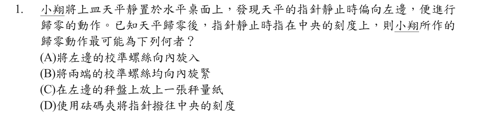
答案A
詳解
指針靜止時偏左，表示左側較重。歸零應調整校準螺絲：把左邊螺絲向內旋入（質量移近支點）可減少左側力矩，使指針回到中央。不可在秤盤放東西或用手撥指針。
依章節編排，各章內由易到難排列。含官方答案、官方通過率、難度標籤與詳解。

指針靜止時偏左，表示左側較重。歸零應調整校準螺絲：把左邊螺絲向內旋入（質量移近支點）可減少左側力矩，使指針回到中央。不可在秤盤放東西或用手撥指針。
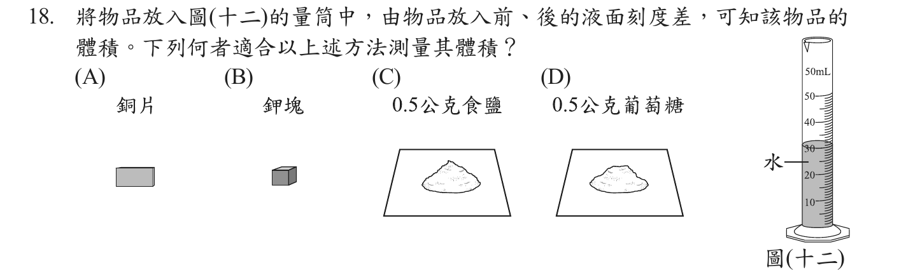
排水法適用於不溶於水、不與水反應且會沉入水中的固體。銅片符合；鉀會與水劇烈反應，食鹽與葡萄糖會溶於水。
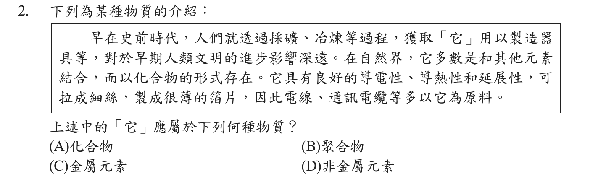
可冶煉取得、自然界多以化合物存在、具導電導熱與延展性、可拉成細絲與箔片（如銅），這些都是金屬元素的性質。
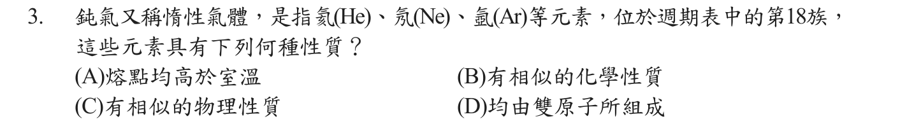
同族元素最外層電子排列相似，因此化學性質相似；鈍氣在室溫皆為氣體、熔點遠低於室溫，且為單原子分子。
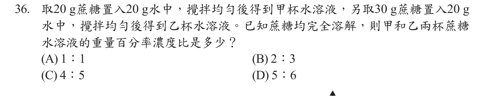
甲：20÷(20＋20)＝50%；乙：30÷(30＋20)＝60%。濃度比 50：60＝5：6。
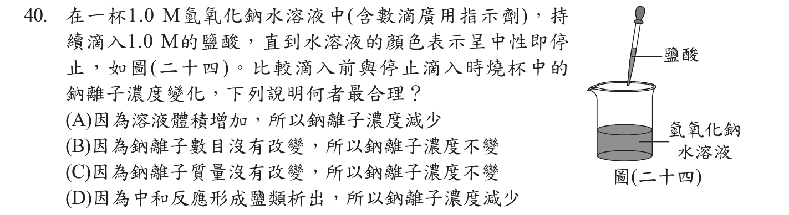
Na⁺ 不參與中和反應，數目不變；但加入鹽酸使溶液總體積增加，所以 Na⁺ 濃度減小。NaCl 易溶於水，不會析出。
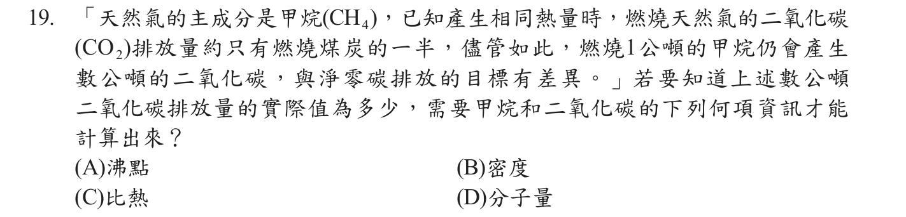
由反應 CH₄＋2O₂→CO₂＋2H₂O，1 mol CH₄ 生成 1 mol CO₂；要由1公噸甲烷換算 CO₂ 質量，需用分子量換算莫耳數（16 g/mol → 44 g/mol，約2.75公噸）。
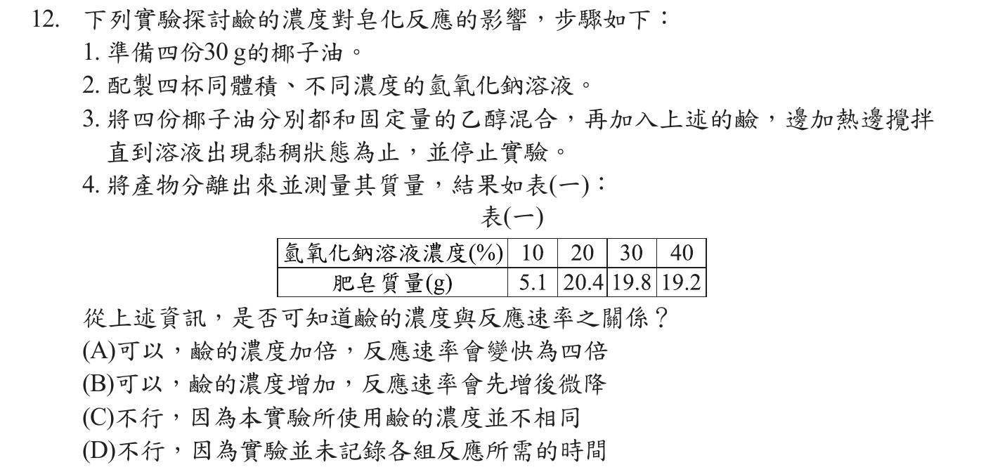
反應速率需要「生成量/所需時間」。表中只有產物質量，沒有記錄各組達到黏稠所需的時間，因此無法判斷鹼濃度與反應速率的關係。
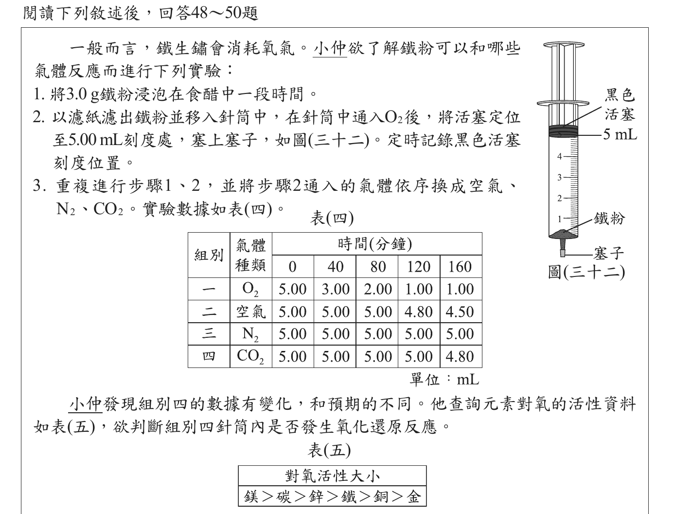
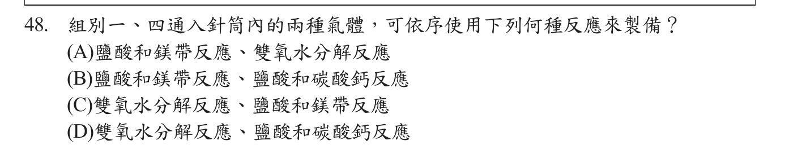
組別一為 O₂：雙氧水分解（加 MnO₂）2H₂O₂→2H₂O＋O₂。組別四為 CO₂：鹽酸與碳酸鈣反應。鹽酸和鎂帶產生的是 H₂。
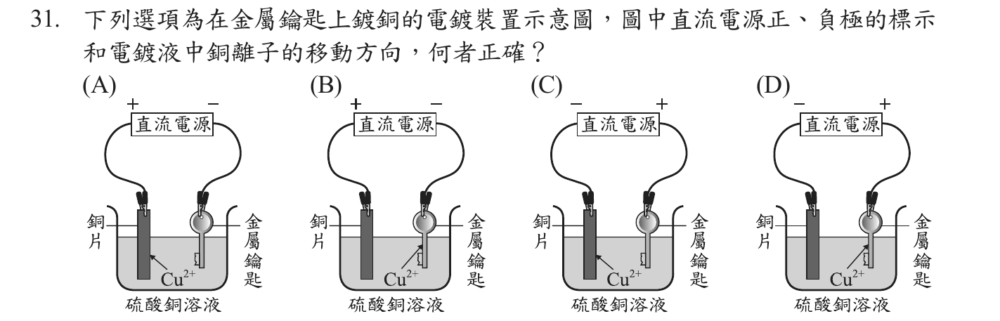
電鍍時，鍍層金屬（銅片）接電源正極作陽極（Cu→Cu²⁺），被鍍物（鑰匙）接負極作陰極；溶液中 Cu²⁺ 向鑰匙移動並還原成銅。符合的是 (B)。
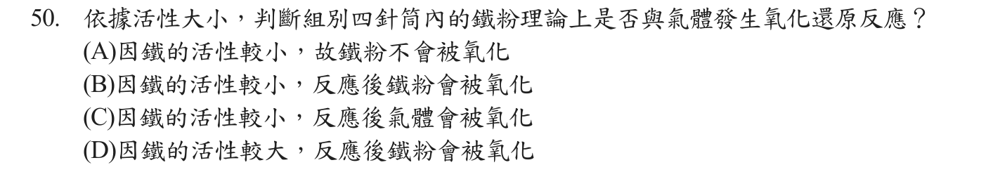
依表(五)活性：碳＞鐵。CO₂ 中的氧與活性較大的碳結合，鐵無法從 CO₂ 奪取氧，理論上不會發生氧化還原，鐵粉不會被氧化（數據變化需另找原因）。
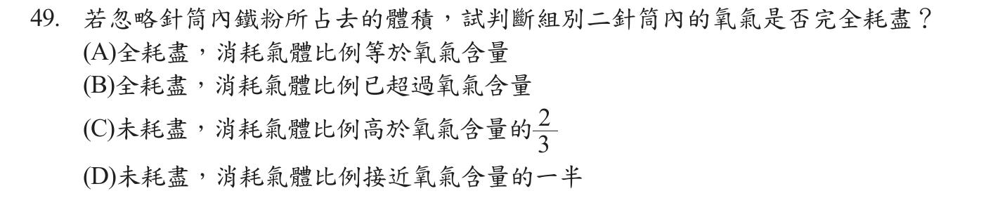
組別二（空氣）由 5.00 mL 降到 4.50 mL，消耗 0.50 mL，即 10%；空氣中氧約占 21%，消耗比例約為氧含量的一半，氧氣尚未耗盡（且 160 分鐘時仍持續下降）。
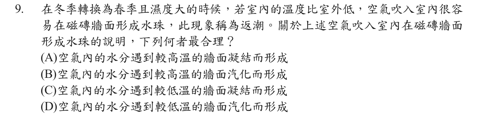
室外暖濕空氣進入後接觸較低溫的磁磚牆面，空氣中水蒸氣放熱、凝結成小水珠。
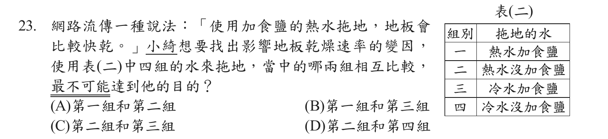
控制變因實驗一次只能改變一個變因。第二組（熱水、無鹽）與第三組（冷水、加鹽）同時改變溫度與加鹽兩個變因，無法判斷是哪一個造成差異。
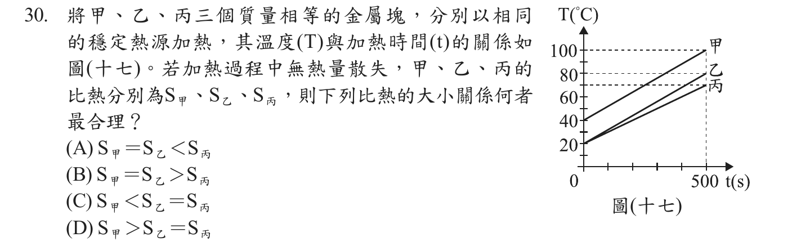
相同熱源、相同時間（500 s）提供相同熱量 H＝m·s·ΔT。甲：40→100 ℃，ΔT＝60；乙：20→80 ℃，ΔT＝60；丙：20→70 ℃，ΔT＝50。質量相同，ΔT 愈小比熱愈大，故 S甲＝S乙＜S丙。
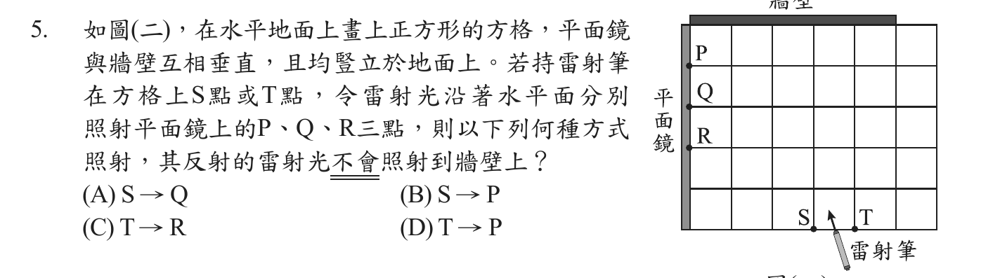
設方格邊長1，鏡在左緣、牆在上緣（長5格）。T→R：光入射方向(−4,+2)，反射後(+4,+2)，從R再上升3格時已向右移6格，超出牆的範圍，不會照到牆。其餘三種反射光都會打到牆上。
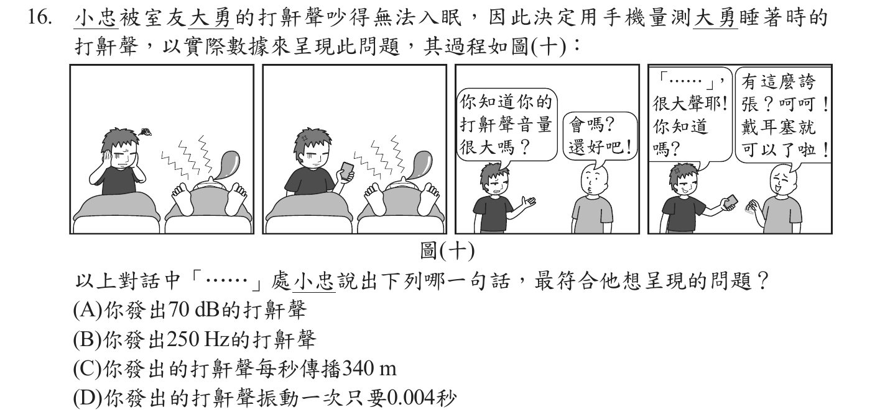
小忠要呈現的是「打鼾很大聲」，大小聲（響度）以分貝 dB 表示。Hz 與週期描述音調（頻率），340 m/s 是聲速，與音量無關。
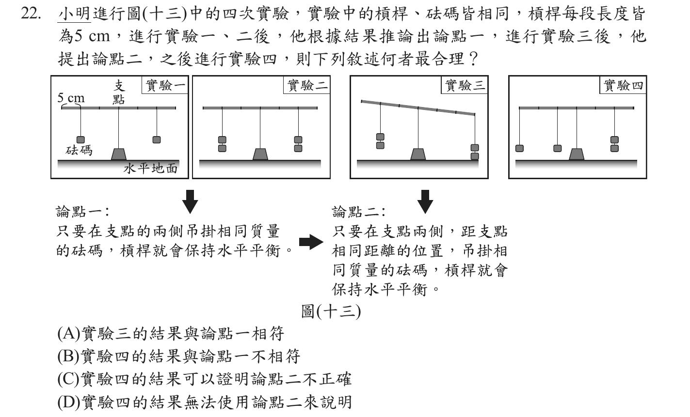
論點二只描述「兩側各一個、等距離、等質量」的情形。實驗四一側掛兩組砝碼於不同位置，超出論點二所能描述的範圍，因此無法用論點二說明；這不等於證明論點二錯誤。
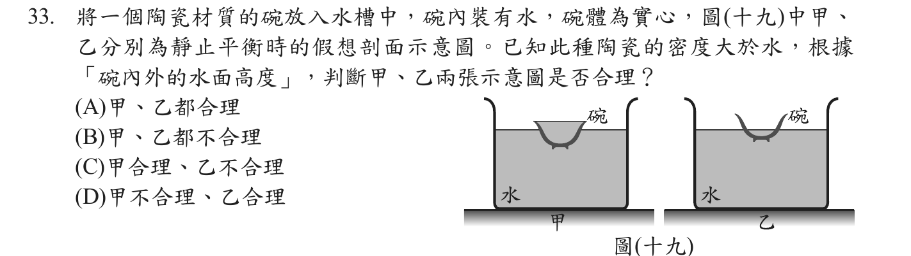
設碗內外水面等高：浮力＝ρ水×(入水陶瓷體積＋碗內水體積)，重量＝ρ陶×陶瓷體積＋ρ水×碗內水體積。因 ρ陶＞ρ水，且入水陶瓷體積不超過陶瓷體積，浮力必小於重量，碗會再下沉；所以平衡時碗內水面一定低於碗外水面。甲（碗內水面高於碗外）、乙（碗內外水面等高）都不合理。
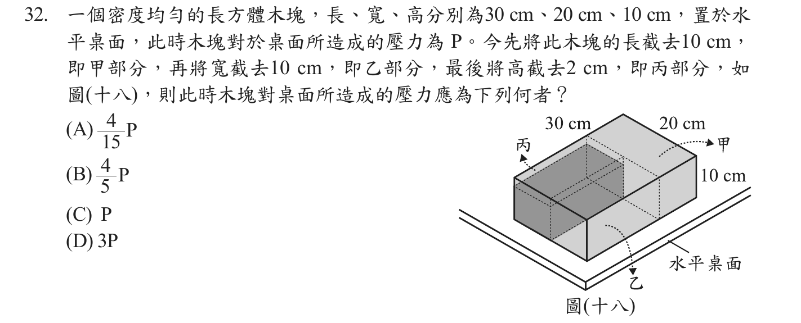
均勻柱體對桌面的壓力（單位面積受力）P＝ρgh，只與高度有關，與底面積無關。截去長、寬不改變 P；高由 10 cm 變為 8 cm，壓力變為 8/10＝4/5 P。
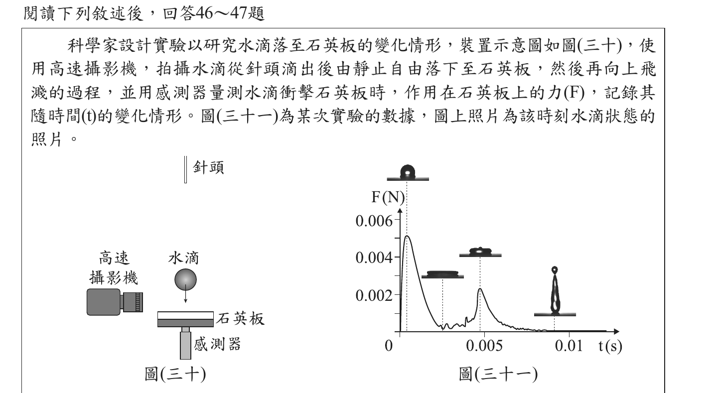
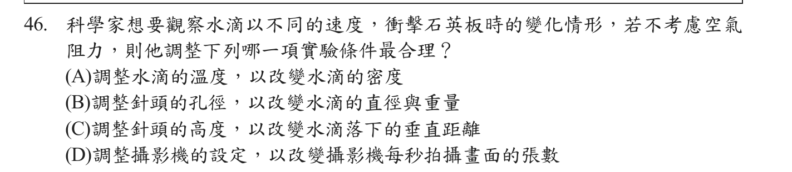
自由落下的末速 v＝√(2gh)，只由落下高度決定（不計空氣阻力），與水滴大小、密度無關。調整針頭高度即可改變衝擊速度；攝影機設定不影響水滴運動。
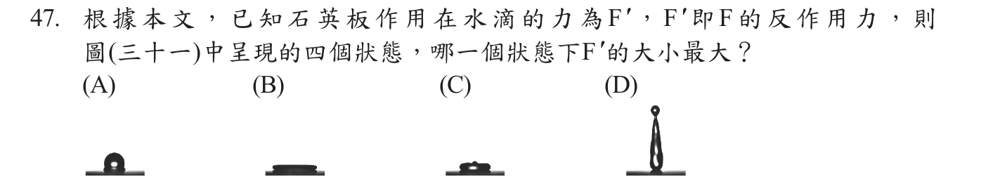
F′ 與 F 為作用力與反作用力，大小相等。由圖(三十一)，第一個狀態（剛撞擊、約 0.001 s）F 約 0.005 N，為四個狀態中最大，故 F′ 也最大。
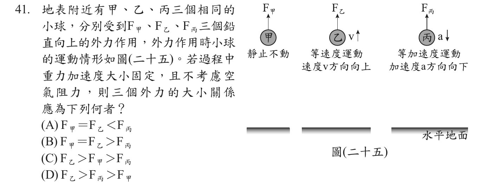
甲靜止、乙等速度，都處於力平衡：F甲＝F乙＝mg。丙具向下加速度：mg－F丙＝ma，F丙＜mg。故 F甲＝F乙＞F丙。
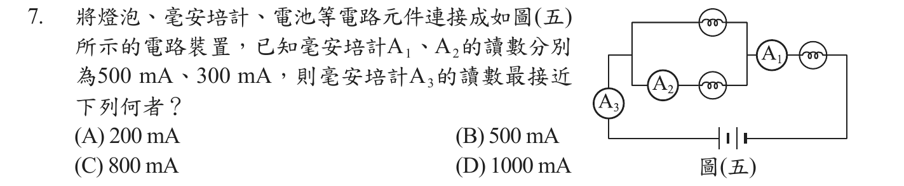
A₁ 位於主線路上（並聯組合之後串聯一燈泡再回電池），A₃ 也在主線路上；串聯電路各處電流相同，所以 A₃＝A₁＝500 mA。A₂ 只是其中一條支路的電流。
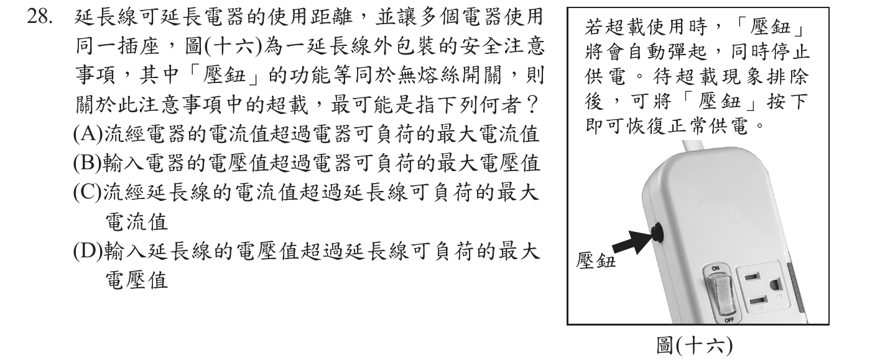
延長線的壓鈕（無熔絲開關）保護的是延長線本身：同時使用多個電器時總電流增加，流經延長線的電流超過其額定值即為超載，壓鈕會跳起斷電。家用電壓固定約110 V，不是電壓問題。
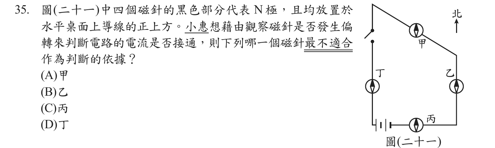
載流直導線上方的磁場方向與導線垂直。磁針原本指南北；丙所在導線為東西向，其上方磁場為南北方向，與磁針原方向平行，磁針不會明顯偏轉，最不適合用來判斷。甲、乙、丁所在導線非東西向，磁場有東西分量，磁針會偏轉。
| 序 | 原題號 | 章節 | 答案 | 通過率 | 難度 |
|---|---|---|---|---|---|
| 1 | 1 | 基本測量與實驗操作 | A | 0.80 | 易 |
| 2 | 18 | 基本測量與實驗操作 | A | 0.60 | 中 |
| 3 | 2 | 物質的組成與元素 | C | 0.87 | 易 |
| 4 | 3 | 物質的組成與元素 | B | 0.74 | 易 |
| 5 | 36 | 水溶液、濃度與酸鹼中和 | D | 0.45 | 難 |
| 6 | 40 | 水溶液、濃度與酸鹼中和 | A | 0.27 | 難 |
| 7 | 19 | 化學計量與反應速率 | D | 0.66 | 中 |
| 8 | 12 | 化學計量與反應速率 | D | 0.63 | 中 |
| 9 | 48 | 氧化還原與電化學 | D | 0.59 | 中 |
| 10 | 31 | 氧化還原與電化學 | B | 0.58 | 中 |
| 11 | 50 | 氧化還原與電化學 | A | 0.42 | 難 |
| 12 | 49 | 氧化還原與電化學 | D | 0.38 | 難 |
| 13 | 9 | 溫度、熱與物態變化 | C | 0.76 | 易 |
| 14 | 23 | 溫度、熱與物態變化 | C | 0.60 | 中 |
| 15 | 30 | 溫度、熱與物態變化 | A | 0.51 | 中 |
| 16 | 5 | 波動、聲音與光 | C | 0.76 | 易 |
| 17 | 16 | 波動、聲音與光 | A | 0.70 | 易 |
| 18 | 22 | 力的平衡、壓力與浮力 | D | 0.63 | 中 |
| 19 | 33 | 力的平衡、壓力與浮力 | B | 0.46 | 難 |
| 20 | 32 | 力的平衡、壓力與浮力 | B | 0.38 | 難 |
| 21 | 46 | 力與運動（牛頓運動定律） | C | 0.64 | 中 |
| 22 | 47 | 力與運動（牛頓運動定律） | A | 0.49 | 難 |
| 23 | 41 | 力與運動（牛頓運動定律） | B | 0.23 | 難 |
| 24 | 7 | 電與磁 | B | 0.64 | 中 |
| 25 | 28 | 電與磁 | C | 0.55 | 中 |
| 26 | 35 | 電與磁 | C | 0.43 | 難 |
難度標籤：通過率 ≥ 0.70 為「易」，0.50–0.69 為「中」，< 0.50 為「難」（編者自訂）。通過率為心測中心公布之有效考生答對比例（自然科有效人數 180,726 人）。